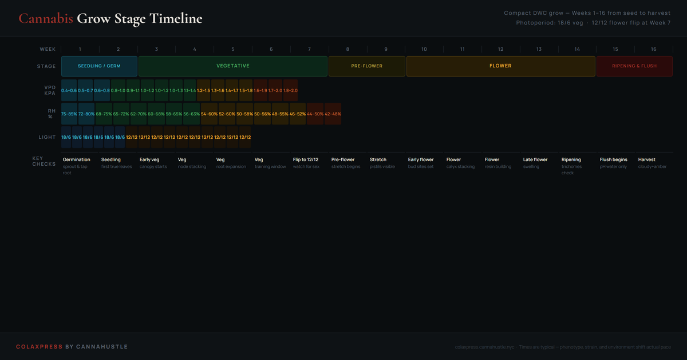

Cannabis grow stage timeline: week by week from seed to harvest.
A compact DWC cannabis grow runs 14–18 weeks from seed depending on strain, training, and when you flip to 12/12. This timeline covers the standard photoperiod run with environmental targets — VPD, humidity, and light schedule — for each stage. Understanding the stages in sequence is what separates growers who react to problems from growers who prevent them.
The most common timing mistake is rushing vegetative. The second most common is holding flower too long chasing the perfect trichome window and losing terpenes to overripening.

Stage-by-stage breakdown
Every stage of cannabis growth has a distinct environmental profile and a distinct set of priorities. Confusing them — treating a flowering plant like it is still in veg, or flipping too early and skipping the root development window — creates compound problems that show up weeks later and look like nutrient deficiencies or disease when they are actually environmental timing errors.
The timeline above shows a 16-week run. Real grows vary. Slow-developing strains may hold veg an extra week or two. Autoflowers skip the flip entirely. But the proportions hold: about one-third of the run is vegetative, two-thirds is reproductive. The environment should change with it.
| Stage | Weeks | Light |
|---|---|---|
| Seedling / Germ | 1–2 | 18/6 |
| Vegetative | 3–7 | 18/6 |
| Pre-Flower / Flip | 7–9 | 12/12 |
| Flower | 9–14 | 12/12 |
| Ripening / Flush | 14–16 | 12/12 |
Seedling
The seed has cracked, the tap root is down, and the first cotyledons are open. The plant has almost no ability to compensate for environmental stress. Keep VPD below 0.7 kPa, RH between 70–80%, and temperatures at 22–25°C. In DWC, use plain pH'd water or a very dilute seedling solution (EC below 0.5). Let the plant build roots before asking it to work.
Vegetative
The plant is now feeding actively. In DWC, the root mass grows visibly between checks. Ramp EC from 0.8 to 1.8 mS/cm across this window. VPD should land between 0.8–1.2 kPa. This is the training window — LST, topping, and defoliation all happen here. Do not flip to 12/12 until the canopy is the size you want after accounting for the 50–100% height stretch that comes in weeks 8–10.
12/12 Trigger
Switching to 12 hours light, 12 hours dark tells the plant that autumn has arrived. Within 1–2 weeks, sex becomes visible at the nodes — pistils (white hairs) for female, pollen sacs for male. The plant will stretch 50–100% in height during the following 2–3 weeks as it commits resources to reproduction. Lower RH to 55–60% and begin transitioning nutrients toward bloom formula.
Flower
Bud sites are stacking. Resin production begins in earnest around week 10–11. This is where VPD management pays off most visibly — plants in the 1.2–1.6 kPa range produce noticeably more trichome coverage than those sitting high-humidity. Watch EC: DWC plants in late flower absorb water faster than nutrients, so EC creeps up. Top off with plain pH water between reservoir changes.
Ripening & Flush
Trichomes are shifting from clear to cloudy to amber. The moment 20–30% of calyxes show amber trichomes (not sugar leaves — they amber earlier), begin flush. Drop EC to near zero using plain pH'd water. The flush window is typically 7–14 days depending on medium. For DWC, 5–10 days is usually sufficient. Harvest when the amber percentage matches your target effect profile.
Post-harvest environment
What happens in the 14 days after harvest matters as much as the grow itself. Drying too fast (below 55% RH) locks in chlorophyll and creates harshness. Drying too slow (above 70% RH) creates mold. The right window is 60–65% RH at 60–70°F with gentle airflow and no direct light on the buds. This is where flavor and smoothness are preserved or lost.
Grow timeline questions
How long does cannabis take from seed to harvest?
A photoperiod cannabis plant in a compact DWC setup takes 14–18 weeks from seed to harvest: roughly 2 weeks seedling, 4–5 weeks vegetative, and 8–12 weeks of flower plus a final ripening and flush window of 1–2 weeks. Autoflowering strains finish faster — typically 10–14 weeks total — because they flower on age rather than a light schedule change. The timeline above shows a standard 16-week photoperiod run; your actual run depends on strain, training decisions, and when you flip.
How long should vegetative stage last in a compact grow?
Four to six weeks of vegetative growth is standard for a compact photoperiod grow. The practical rule: flip to 12/12 when the plant is approximately half the final canopy height you want — most strains stretch 50–100% after the flip. Flipping too early results in low yield because the plant has insufficient mass to convert to flower; flipping too late means the canopy reaches the lights mid-flower with no room to recover. In a compact cabinet, most growers flip at week 5–6 with the plant at 30–45 cm.
How many weeks does cannabis take to flower?
Most photoperiod strains take 8–12 weeks from the 12/12 flip to harvest-ready trichomes, plus 1–2 weeks for the flush window. Indica-dominant strains typically finish in 8–9 weeks of flower; sativa-dominant strains commonly run 10–12 weeks. Use trichome inspection — not a calendar — to confirm the harvest window. Identical strains can vary by a week or more depending on environment, and chasing the calendar when the trichomes haven't moved is one of the most common timing errors in craft growing.
What changes in the environment at the flip?
Three key variables shift when you flip to 12/12. Relative humidity drops from 55–70% in veg to 40–55% in late flower to prevent mold in the dense bud structure that develops. VPD rises from the 0.8–1.2 kPa vegetative range toward 1.2–2.0 kPa in late flower as you lower humidity. Nutrients transition from nitrogen-forward formulations to phosphorus and potassium-heavy bloom ratios — cutting nitrogen at the flip is not optional, as excess N in late flower suppresses resin and delays maturation. Temperature targets remain broadly consistent at 22–26°C throughout the grow.
Related guides
VPD chart for cannabis
kPa targets by grow stage — interactive temperature vs humidity reference grid.
Trichome stages chart
Clear, cloudy, and amber trichome stages — visual guide to the harvest window.